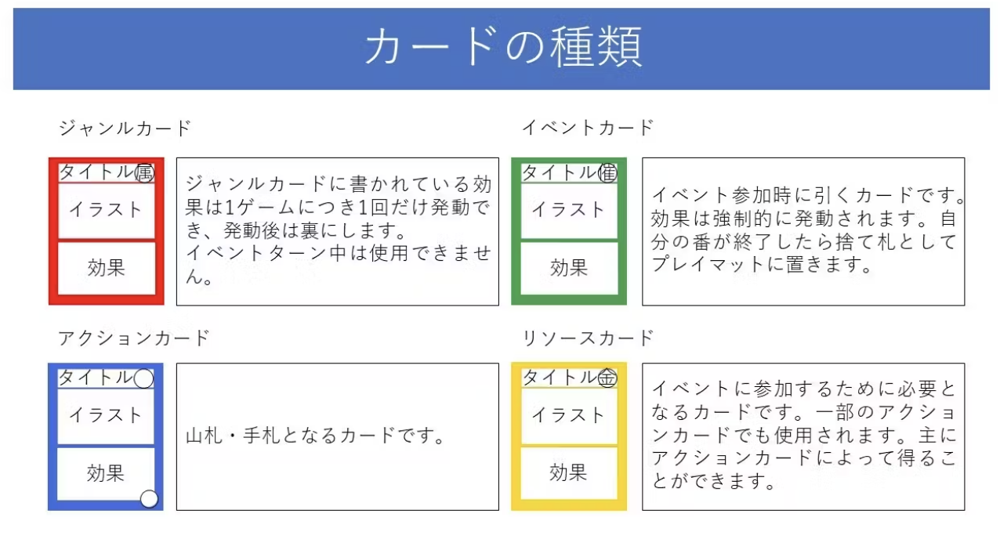
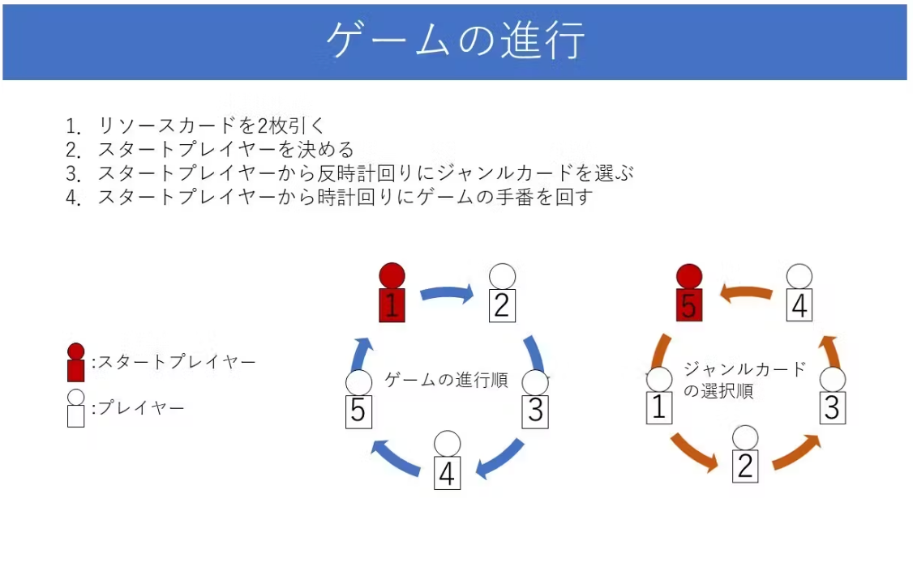
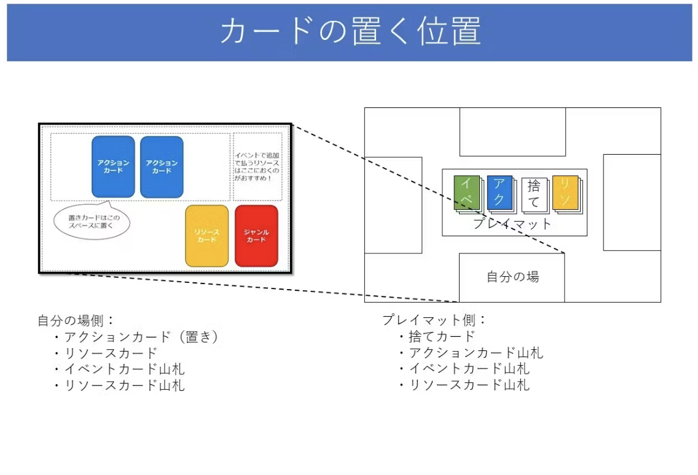
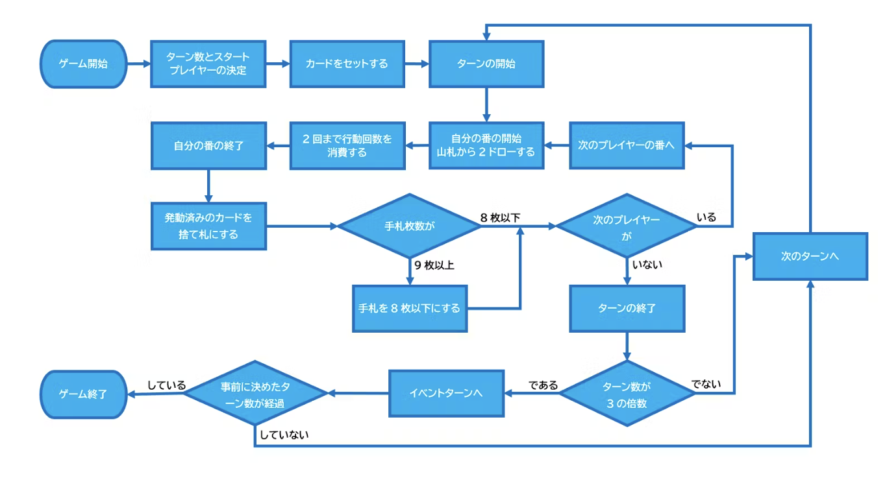
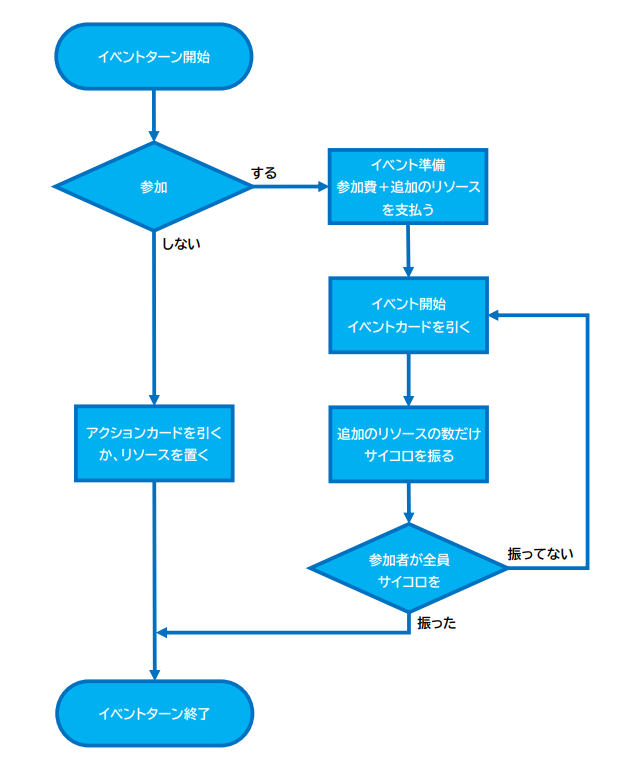

全体ルール
このカードゲームはアクション（創作活動）やイベント（コミケ出展）を行い、FP（フォロワーポイント）を集めていくゲームです。FPをたくさん集めて壁サーになりましょう！！
●プレイ人数：2人～7人（推奨人数：4人）
●プレイ時間：30分～90分
●対象年齢：9才～
内容物
●ルール説明書＆カード一覧 1枚
●プレイマット 1枚
●サイコロ 1個
●コマ 7色×2個
●カード 163枚
●ジャンルカード（赤）…7枚
●アクションカード（青）…90枚
●イベントカード（緑）…26枚
●リソースカード（黄）…40枚
ゲームの準備
1．ゲームを行うターン数を決めます。ターン数は6ターン以上の3の倍数で決めてください。
2．スタートプレイヤーを決めてください。ゲームは時計回り順に進行します。スタートプレイヤーの右隣の人から反時計回りで好きなジャンルカードを1人1枚選択し、既定の場所に表にして置いてください。
3．アクションカードをシャッフルし、裏にしてプレイマットに置きます。これが山札になります。スタートプレイヤーから時計回りで1人2枚ずつ手札にします。
4．リソースカードを各プレイヤーは自分の場に2枚置いてください。残りのリソースカードはプレイマットに置いてください。
5．イベントカードをシャッフルし、プレイマットに裏にして置いてください。
 ゲームの流れ
■自分の手番
自分の番になったら、山札から2枚ドローします。その後、手札にあるカードを自分の場に出すことができます。基本的には行動回数を2回消費するまでです。行動回数はアクションカードの効果によって変化します。効果を発動したカードは（一部を除き）捨て札としてプレイマットに置きます。自分の番が終了した時点で手札が9枚以上残っていた場合は手札を捨てて8枚以下にします。
■イベントターン
3ターンに1回イベントターンが開催されます。プレイヤーはイベントターンに参加するか選択します。
〜参加しない場合〜
山札からアクションカードを2枚ドローするか、リソースカードを1枚自分の場に置きます。
～参加する場合～
【イベントターンの準備】
イベント開始前に参加するプレイヤーは全員以下の手順で準備を行います。
1．参加費としてリソースを1枚支払います。
2．自分の場からリソースを追加で5枚まで支払います。
【イベントの開始】
イベントは参加したプレイヤーだけで時計回りに進めます。自分の番に行うことは以下の通りです。
1．イベントカードを1枚引き、効果を発動します。
2．追加で出したリソースの数だけサイコロを振ります。4・5・6が出たらリソースを1枚と100FPを獲得できます。（イベントカードの効果によって変わるかも？！）しかし、1・2・3が出るとリソースもFPも獲得することができません。サイコロをすべて振り終わったらイベントカードは捨て札としてプレイマットに置き、自分の番を終了します。
3．イベントに参加したプレイヤーは1.2の手順を同様に行います。
■ゲームの勝敗について
事前に決めたターン数が経過し、イベントターンが終了した時点で、合計FP（フォロワーポイント）が一番高いプレイヤーが勝ちです。